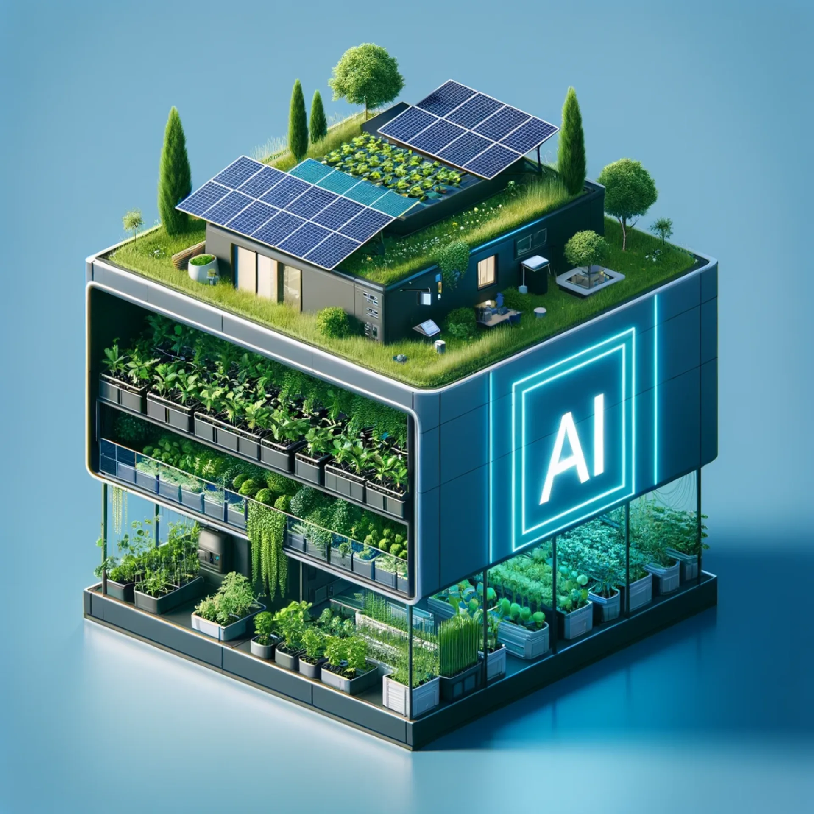
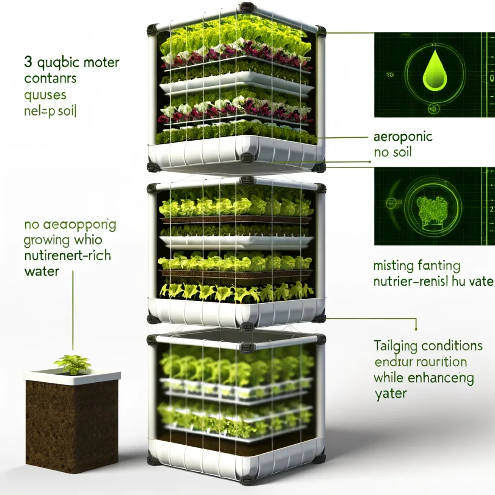
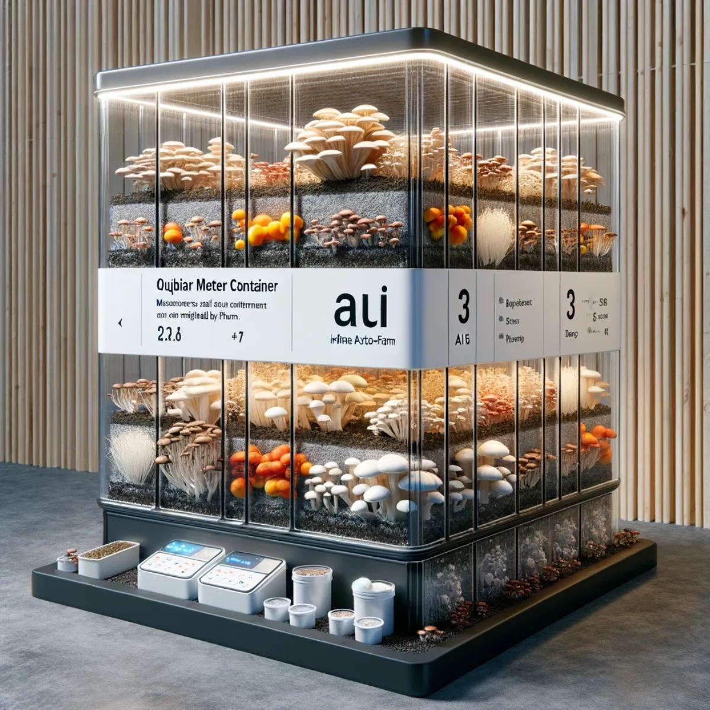
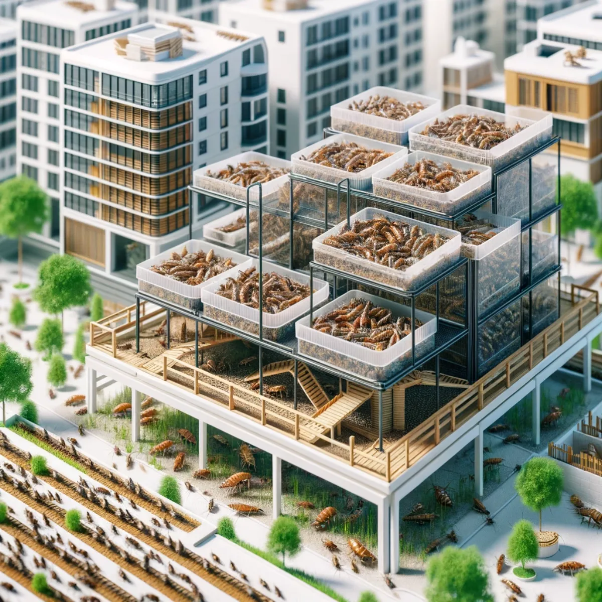
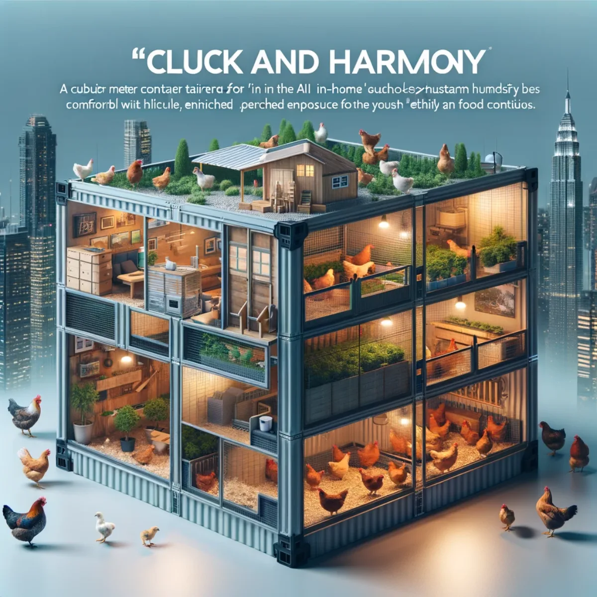
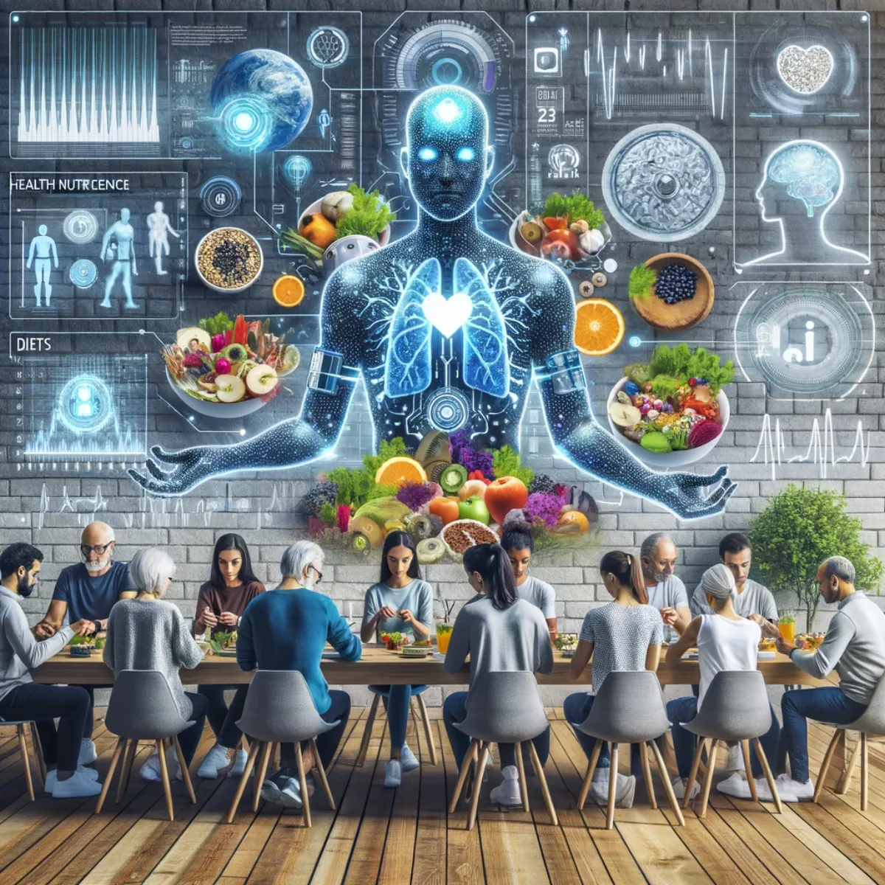

Pathways / Frontiers
In-Home A.I. Auto-Farm
An in-home, AI-managed food system that grows fresh, nutrient-rich food year round, tailored to your household's health.

Harvest at home with A.I: high-tech, high yield, year round
Climate-Proof Food Security
In the era of climate uncertainty, the In-Home A.I. Auto-Farm heralds a new chapter in sustainable living, offering a beacon of hope for food security.
The concept of this cutting-edge system is based on cubic metres of space used by robotic artificial intelligence to cultivate a diverse array of crops within the comfort of your home, ensuring a bountiful harvest regardless of external weather or social-political conditions. It's not just about growing food; it's about nurturing a sustainable future, making every home a stronghold against the climate crisis.

Mist magic: nourishing nature, no soil required
Aeroponics: Sky-High Harvests
Aeroponics, the future of farming, suspends plants in air, misting their roots with nutrient-rich solutions. This soil-less marvel saves water, space, and boosts growth rates, making it perfect for urban settings. Sky-High Harvests brings the cloud gardens into your home, offering a glimpse into a future where greenery thrives everywhere you wish.
Integrated into the In-Home AI Auto-Farm, it receives precise, data-driven care from AI systems, which adjust conditions based on environmental feedback and nutritional needs. This synergy ensures that each plant contributes optimally to the household's diet, potentially extending the residents' health-span with fresh, nutrient-rich foods.

Small sprouts, superpowers: eat micro, think macro
Microgreens: Tiny Greens, Giant Nutrition
Tiny Greens, Giant Nutrition introduces the powerhouse world of microgreens. Packed with flavour and nutrients, these miniature plants are a testament to the saying that great things come in small packages. Cultivated quickly and efficiently, they represent a sustainable, space-saving solution to nutritional needs in compact urban environments.
These tiny plants, dense in vitamins and minerals, can be cultivated in an AI-managed environment where conditions are meticulously adjusted to optimise growth and nutritional value. By analysing health data from smart wearables, the system tailors microgreen varieties and nutrients to meet the specific dietary needs of each household member, making each bite a step towards longevity and vitality.

Mushroom majesty: unearth nature's hidden treasures
Mushrooms: Fungi Fantasia
Fungi Fantasia delves into the enchanting realm of edible mushroom cultivation. A cornerstone of the AI In-Home Auto-Farm, it showcases how diverse fungi varieties are grown in controlled conditions, offering a year-round, sustainable source of food. This magical kingdom of mushrooms highlights the untapped potential for living a long and healthy life.
Their integration into the nearly closed-loop system exemplifies circular economy principles, where by-products from other components become inputs for mushroom cultivation. This not only minimises waste but also provides the household with medicinal and nutritional benefits, contributing to a sustainable, health-focused lifestyle.

Creepy crawly cuisine: the future of feast
Insects: Buzzing with Protein
Buzzing with Protein uncovers the eco-friendly and nutritious world of insect farming. As a viable protein alternative, insects like crickets and mealworms are farmed with minimal resources, offering a solution to the protein supply challenge. This segment explores how such tiny creatures can play a giant role in our dietary future.
These tiny protein factories are a testament to the system's efficiency, transforming organic waste into high-quality nutrients. This protein can then be eaten by humans, cooked, dried or powdered, or fed to fish and animals in the ecosystem.

Aqua abundance: where fish and plants thrive together
Fish Aquaponics: Water Wonders
Water Wonders explores the symbiotic relationship in fish aquaponics, where fish waste nourishes plants, and plants purify water for fish. This self-sustaining cycle not only produces fresh produce and fish but also exemplifies an eco-conscious approach to farming, bringing the harmony between aquatic life and agriculture into your own home with AI management.
This cycle exemplifies the system's closed-loop philosophy, reducing the need for external inputs and minimising waste. Tailored to the household's health data, the system ensures that both fish and plants provide the essential nutrients needed, fostering a diet that can lead to improved wellbeing and longevity.

Feathered friends: farming with flair and care
Chicken Husbandry: Cluck and Harmony
Cluck and Harmony presents a humane approach to chicken husbandry within the AI In-Home Auto-Farm. It emphasises ethical care, space, and natural behaviours, ensuring the wellbeing of chickens while providing fresh eggs and, for the omnivores, meat. This segment shows how technology and compassion can coexist in modern farming practices.
Their integration into the AI Auto-Farm allows for the recycling of plant waste as feed, insects as feed, and then the use of chicken manure to supplement the nutrients of the water that feeds the plants when fish waste is not enough.

Wearable wisdom: your health, A.I's harmony
AI-enhanced Smart Wearables: Health at Hand
Health at Hand reveals the integration of AI-enhanced smart wearables in monitoring and improving personal health. These devices can be coordinated to offer real-time biofeedback, tailoring the farm's produce to meet individual nutritional needs.
This dynamic interaction ensures that each component of the farm contributes to the dietary needs of the household, potentially preventing lifestyle-related diseases and enhancing overall wellbeing. This approach exemplifies the fusion of technology and health, where food becomes medicine, tailored to each individual's micro-biome, DNA, blood glucose, physical output and more.

Join the vision to harvest in-home with Aura of Intelligence
Cultivate the Future of Farming
Imagine a world where every household cultivates its own fresh, nutrient-rich food, tailored precisely to the inhabitants' dietary needs and health profiles. Our vision encompasses aeroponic greens, symbiotic aquaponics, ethical poultry, and innovative mycology, all managed by cutting-edge AI that learns and adapts to optimise growth and nutritional output.
But to turn this vision into reality, we need more than just ideas. We need pioneers, innovators, and visionaries. We need you. Whether you're an inventor with a knack for sustainable solutions or an investor passionate about making a tangible impact on the world, your expertise and enthusiasm can help shape this future. By joining Aura of Intelligence, you're not just investing in technology; you're cultivating a legacy of health, sustainability, and innovation. Together, we can build ecosystems that not only feed bodies but also nourish minds and heal the planet. Let's sow the seeds of tomorrow, today.
Keep exploring